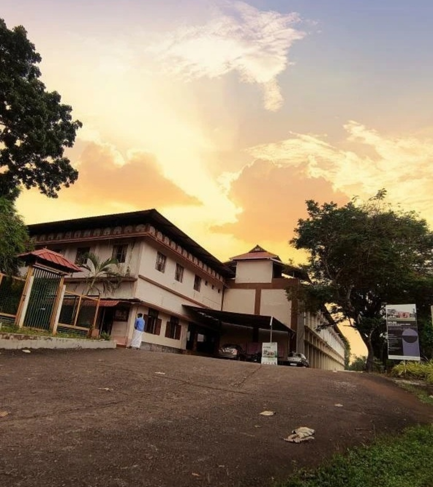

SOFTWARE DEVELOPMENT

About The Course
B Voc or Bachelor of Vocational Studies in Software Development is a 3 years undergraduate degree course that aims at improving the skills of the candidates by concentrating on theoretical knowledge as well as practical training. The main aim of this course is to give out skills related to Computer Science and Software Development. Bachelor of Vocational Studies is a practical and skill-oriented program which focuses on important practical knowledge along with theoretical knowledge.
About The College
KSMDB College, Sasthamcotta, established in 1964 in Kunnathur taluk, takes its place in the annals of the history of South Kerala as a revered institution for higher education managed by the Hon’ble Travancore Devaswom Board, and affiliated to the University of Kerala. The college is blessed at the entrance by the temple of Lord Dharma Sastha and is set in the beautiful serene locale on a landmass surrounded on three sides by the famous Sasthamcotta lake, the largest freshwater lake of Kerala and a Ramsar site, lending an aura of grace, reverence for the environment and sense of oneness with the grandeur of Nature.
K.S.M.D.B.C
The college was recognised by the University Grants Commission under the 2 (f) and 12 (B) schemes in 1977 and 1979 respectively. Starting with Pre degree courses, the college now caters to the demands of students for 17 undergraduate programmes, 7 post graduate courses, 2 PhD programmes and 2 Diploma programmes. The college strives to provide holistic education so as to mould students into citizens who are endowed with a value system and environment consciousness, while pursuing their academic ambitions. Throughout its history spanning over 50 years, the college has believed in discharging its social responsibility as an abode of higher education in the public sector catering mostly to the less privileged sections of the society.